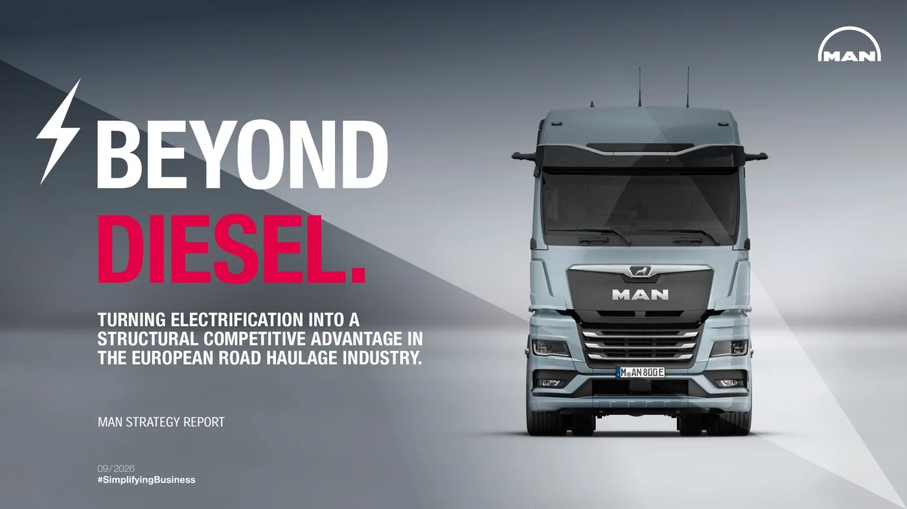

MAN Truck & Bus publicó el 7 de septiembre de 2026 el informe Beyond Diesel. El documento analiza la electrificación a través de tres clientes: Foppiani Transport, en Italia; Betonwerk Bad Lausick, en Alemania; y Schlager Transport Logistik, en Austria.
Su enfoque combina vehículo, depósito, carga y gestión energética. La marca plantea ventajas de costo total de hasta un 13% frente al diésel a cinco años bajo los escenarios considerados. Es una conclusión condicionada del fabricante, no un ahorro garantizado para cualquier empresa ni una estimación aplicable directamente a Argentina.
Los casos representan diferentes etapas de adopción. El interés del anuncio está en mirar la operación completa y no limitar la comparación al precio del camión. Las condiciones europeas del estudio deben mantenerse separadas de las tarifas, infraestructura y modalidades de trabajo de una flota local.
Una comparación que empieza antes de la compra
Análisis de Zabala Repuestos. Para ordenar una evaluación, conviene empezar con un inventario del servicio actual: recorridos, unidades utilizadas, horarios y períodos de inactividad. Esa base permite descubrir qué información ya existe y qué hace falta medir antes de solicitar una propuesta.
El objetivo no es elegir primero una tecnología y después buscarle una tarea. Una prueba resulta más útil cuando responde una pregunta concreta: si determinada unidad puede completar un circuito conocido bajo condiciones previamente definidas. Eso evita cambiar los criterios cada vez que aparece un resultado favorable o desfavorable.
El depósito también tiene horarios y restricciones
Un plano ayuda a conversar sobre circulación interna, estacionamiento y acceso de servicios técnicos. Importa saber qué posiciones se ocupan de noche, cómo se reordenan los vehículos y quién mueve una unidad si necesita cambiar de lugar. La organización cotidiana puede ser tan relevante como el equipo elegido.
La evaluación de una instalación debe quedar a cargo de profesionales y proveedores habilitados. Para el operador, lo importante es recibir una explicación clara de plazos, alcance y responsabilidades. No alcanza con conocer la fecha de entrega del vehículo si otra parte necesaria del proyecto sigue pendiente.

Separar gastos permite entender el resultado
Una planilla de comparación puede distinguir compra o contratación, instalaciones, energía, mantenimiento y tiempo de disponibilidad. Conviene conservar los supuestos de cada casillero para que otra persona pueda revisar el cálculo. Un total sin explicación sirve poco cuando cambian las condiciones.
También importa utilizar el mismo horizonte y una tarea comparable. Si una alternativa realiza menos viajes, el costo por vehículo no describe por sí solo el resultado del servicio. La empresa puede pedir que la propuesta explique qué trabajo está incluido y qué actividades requieren medios adicionales.
Una prueba pequeña necesita criterios de cierre
Antes de comenzar, deberían definirse duración, responsables y resultados a observar. Completar recorridos, cumplir horarios y resolver incidencias son dimensiones distintas. Registrar cada una permite discutir el desempeño sin reducir toda la experiencia a una impresión del primer día.
La participación del conductor merece espacio propio. Sus observaciones sobre maniobras, mensajes y rutina de uso pueden ayudar a mejorar el procedimiento. El objetivo de la prueba también es aprender qué capacitación necesita la organización para utilizar el conjunto con claridad.
Cómo leer el informe desde el mercado argentino
La conclusión más aprovechable es metodológica: pedir una propuesta completa y revisar sus supuestos. No corresponde convertir una ventaja calculada en otro país en una promesa local. Una evaluación argentina necesita datos argentinos y confirmación de soporte para la configuración ofrecida.
Para un taller, el proceso también abre preguntas sobre formación, documentación y atención de componentes específicos. Es mejor conocer esas necesidades antes de incorporar unidades que descubrirlas durante una inmovilización. La electrificación debe poder explicarse como una operación que tiene responsables, procedimientos y respaldo.
El informe aporta experiencias para esa conversación. Su utilidad aumenta cuando sirve para formular mejores preguntas, no cuando se toma una cifra destacada como respuesta universal. Cada flota necesita comprobar qué puede trasladar a su propio trabajo y qué permanece ligado a las condiciones del caso original.